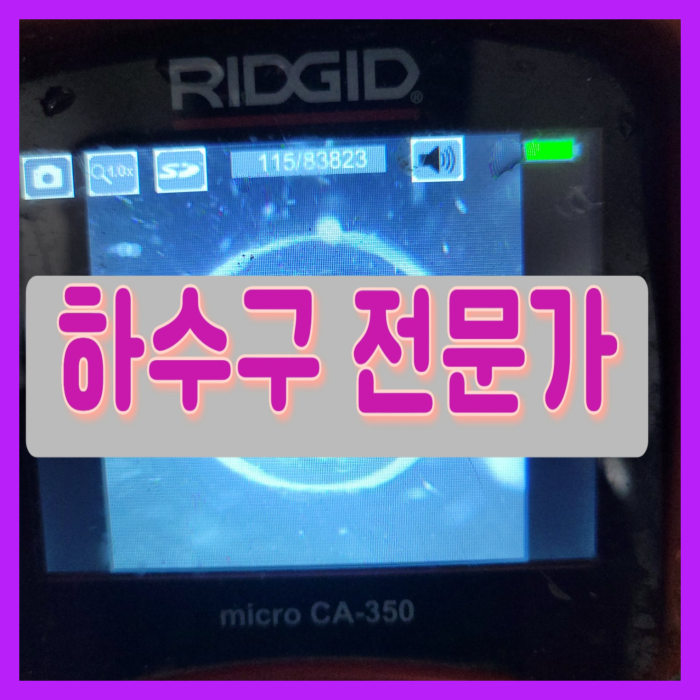
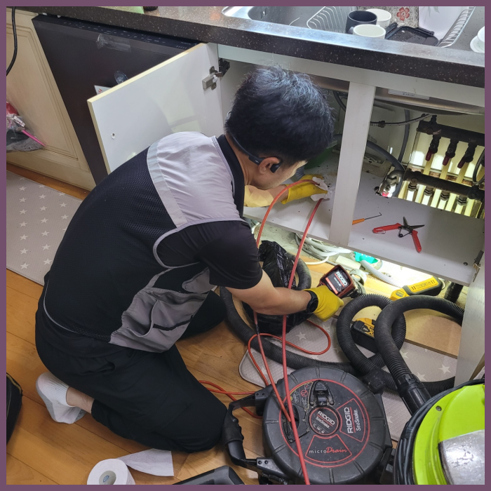
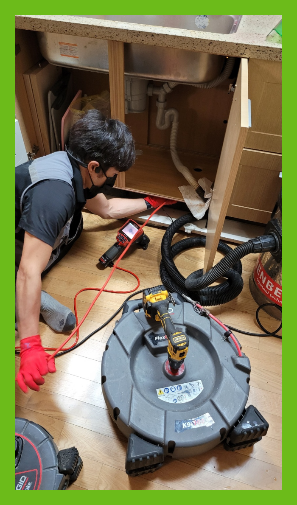
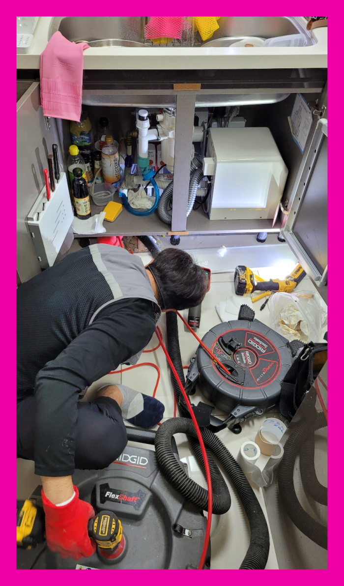
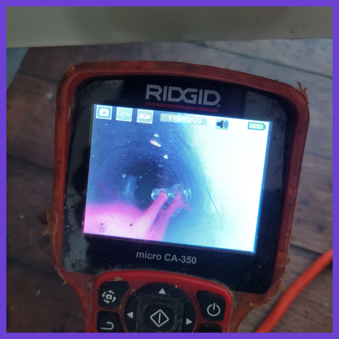
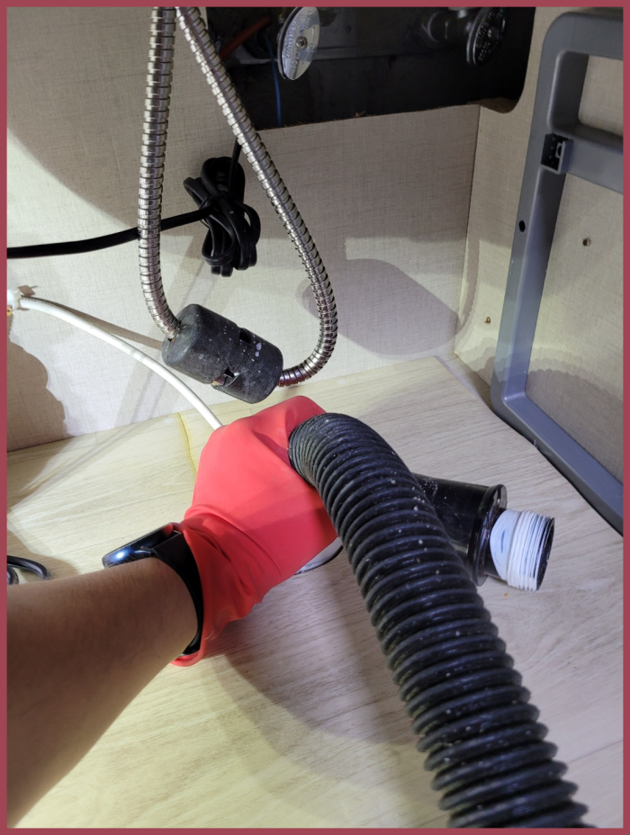

🏠 양주 남방동씽크대배수관막힘 덕계동 냄새차단 설비공사
양주 싱크대막힘 전문 시공 후기

📋 작업 개요
- 위치: 양주
- 서비스 유형: 싱크대막힘, 변기막힘, 하수구막힘, 배관막힘, 역류해결, 뚫는업체, 배관청소, 고압세척, 설비공사, 악취차단
- 작업 일시: 2025. 5. 31. 12:28
- 업체명: 하수구수사대 (010-5615-2118)
🔍 문제 상황
안녕하십니까^^
설비전문업체 "하수구수사대"를 찾아주셔서 감사합니다^^
배출관막힘을 셀프로도 가능하다고 생각하셨고 그렇게 해결을 몇 번 하셨지만 이번에는 도저히 그걸로는 해결이 되지 않아서 바로 출동하게 된 거죠. 우선 악취가 너무 심하게 나서 들어가는 순간 너무 당황스러웠고 일단 배출관역류까지 하고 있어서 이것부터 해결하기로 하였습니다.
양주 덕정동 배수관막힘 씽크하수구역류 기름때 청소 설비업체
하수관 문의하는 입장이라면 맡기는 사람이 출중한 실력을 갖추고 뒤끝없이 해결하시기를 바라실 텐데 그게 아니라면 골치 아픈 것이 사실입니다. 실제로도 믿고 맡겼다가 피해를 입으신 사연이 많은 것을 볼때 상상보다 흔한 일이라는 것을 유추가 가능합니다.

🔎 원인 분석
💡 전문가 진단: 양주 덕정동 배수관막힘 씽크하수구역류 기름때 청소 설비업체
하수도 구조를 알고 있는 경우는 극히 드물기 때문에 문제가 생겼을때 수리하는 방법을 모를 수 밖에는 없습니다. 아무리 전문가라고 해도 배관의 깊은 곳까지 두눈으로 들여다 볼수 없기 때문에 반드시 내시경 장비를 사용하여 작업을 하고 있습니다.
수시로 막히는 하수도배관과는 다르게 스케일링 작업을 하면서 하수도막힘에 대한 해결을 할 수 있는 것입니다. 배관 스케일링 작업을 하기 위해서 장비들을 세팅을 먼저 샤프트기를 투입하였는데요. 샤프트기는 배관의 커다란 이물질들을 분쇄한 후에 잘게 부수어서 배출을 할 수 있도록 하는 장비입니다.
배출구 내부를 확인하고 배관 안 쪽에 아직 남아있는 슬러지들을 꼼꼼하게 제거하고 근본적인 원인을 제거해야 또 다시 막히는 일이 없으니 이런 식으로 뚫는 작업을 한다면 막힘이 나타나지 않을 거에요.
저렴하기만 한 비용으로 작업해 주는 곳을 알아보셨다가 손실을 입는 배수구원인이 있다면 성의가 없었기 때문이에요. 분쇄 작업에는 상황들에 따른 기계 준비가 안 되어 있으면 시공이 어려워져요.
아무래도 전문장비가 없으면 배출관 막힘을 발생하면 배수관을 교체공사 해야 하는 경우가 많았는데요. 많은 고객님들이 번거롭고 부담스럽다는 생각을 하실수 있었던 곳입니다. 하지만 이제는 장비를 활용해서 신속하게 문제를 해결할수 있어서 많이 좋았습니다.

🔧 작업 과정
배수구막힘 부분을 해결하기 위해서 샤프트 장비를 사용하기로 하였고 배관 아래에 넣어 이물질들을 빠르게 분쇄 진행하였습니다. 이 장비를 사용하는 이유로는 배수구내부 벽면에 달라붙어있는 부분까지 깔끔하게 제거하면서 배관 내 상태를 최적의 상태로 만들어주기 위함인데요
보통 셀프로 하는 방법은 퇴수 속의 이물질은 그대로 존재하는데 단순히 물이 배수될 정도로만 통수가 된 것이나 비슷해서 근복적인 원인을 제거하기 위해서는 고압세척이 필요로 합니다.
이렇게 오랜 기간 토사물이 배출구에 쌓이면 단단하게 굳게 되며 그로 인해 막힘 정도가 심해집니다. 특히 배출구배관 근처에 공사 현장이 있거나 산이 있다면 주기적으로 관리가 꼭 필요합니다.
고객님들이 불편사항이있어 서둘러방문하면 다른업체에서 제대로수리를하지않은 배수관 전문배관기사도 때떄로있어요 원인진단을해볼때 이물질들을완벽히 청소하지않은채로 배수만가능하게하는 통수작업만 하고나서 마무리를짓는경우도 보았습니다
배수원인은 상당히많기때문에 대처법들을 숙지하고있기는 어려운게 현실이죠.셀프시도는 옳지않기에 생각을다르게 해주시는게좋아요.실력자분들에게 문의해보시는게 가장빠르답니다.그러하나 찾아보더라도 수없이많은 업체들로인해 의뢰하려하더라도 어떤곳을 택해야되는지 어려우실겁니다
배관에관한 대부분을 처리하고있어서 막힌것만 해결하는것이아닌 설비쪽대부분을 문제를없애드리고있어요.안막혔는데 배수구안에서 고약한냄새가 날때도있습니다.원인이다다르기에 정확하게찾기위해서 금방출장가서 전체를살펴보고난후 악취를해결하고있답니다
간단하게만 믿으셨다가 문제가더배로 커지게됩니다.지금이라도 안되는걸 생각하시고 있다면은 배출관 뚫으실려한생각을 그만두는게좋습니다!
작업 후 퇴수구배관이 빈 것을 보면서 확인이 가능하지만 물이 잘 내려가는지 확인을 위해 통수를 해서 잘 빠지는지, 역류나 물이 차오르지는 않는지 이중 삼중의 확인이 필요합니다.


✅ 작업 완료
빠르게 달려가겠습니다. 전문 장비가 있다고 좋은 업체라기보다는 배수전문 장비가 있으면서 그걸 잘 다루는 전문가가 있어야 좋은 업체인데요, 저희는 그간 다양한 현장에서 쌓은 노하우와 실력으로 어느 현장에 더 문제없이 해결이 가능합니다.
밤이든 낮이든 근무 중이기에 언제가 됐든 간에 의뢰해 주세요. 직접 보지 않고선 정확한 금액 안내가 힘들겠지만 기준 금액만큼은 말씀 가능하니 여쭙고 싶은 상황이 있으실 경우에는 전화 주시면 되십니다.배출관가 막혀 대처하고 싶으시거나 상담을 원하실 경우 전화 걸어주세요
#하수구막힘 #하수구뚫음 #하수구역류 #씽크대막힘 #싱크대역류 #오수관막힘 #하수구청소 #욕실하수구막힘 #변기막힘 #하수구뚫는비용 #싱크대수리 #화장실막힘




⚠️ 주방 싱크대 배관 막힘 예방 수칙
- ✅ 기름기가 묻은 식기나 프라이팬은 설거지 전 키친타올로 반드시 기름때를 닦아내세요.
- ✅ 주기적으로 싱크대 개수대에 뜨거운 물을 가득 받아 한 번에 내려 배관 내부 기름을 씻어내세요.
- ✅ 배수구 거름망을 미세한 필터로 사용하시고 음식물 찌꺼기가 틈으로 새어 들지 않게 관리하세요.
- ✅ 베이킹소다와 식초를 뜨거운 물과 함께 일주일에 한 번씩 부어주면 배관 살균과 막힘 예방에 좋습니다.
💡 핵심 정리
- 확실한 장비 작업(내시경 점검 및 샤프트 스케일링)으로 원인을 뿌리 뽑습니다.
- 작업 후 1년 이내에 동일한 부위 재발 시 100% 무상 A/S 서비스를 보장합니다.
- 서울 · 경기 · 인천 전 지역에 24시간 언제든 긴급 출동할 수 있도록 항시 대기 중입니다.
❓ 자주 묻는 질문 (FAQ)
🚨 양주 싱크대막힘 문제로 고민이신가요?
정확한 원인 진단과 확실한 시공으로 재발 없는 해결을 약속드립니다.
24시간 긴급 출동 | 서울 · 경기 · 인천 전지역 | 1년 내 재발 시 무상 A/S